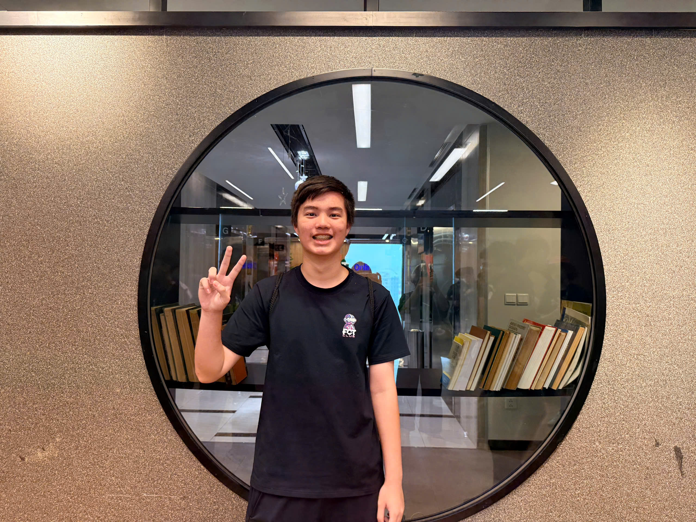
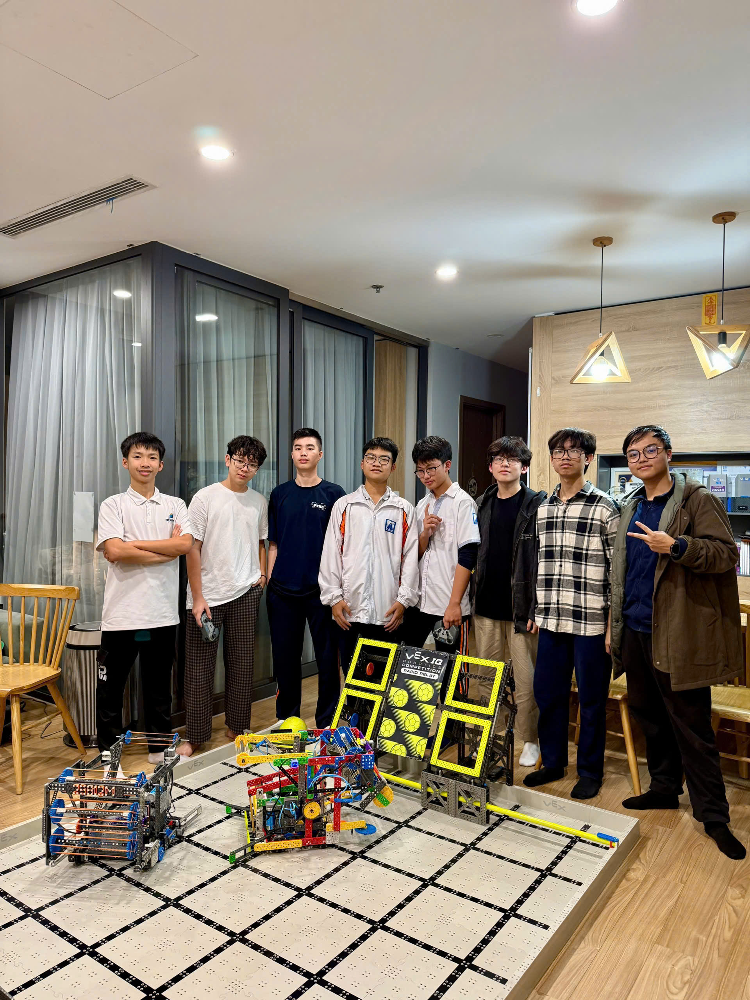

About Me
Hi! My name is Dao Duy Bach! I'm currently a 12th grade student studying at Hanoi-Amsterdam High School for the Gifted.
My class follows a dual programme: alongside the Vietnamese high-school curriculum, we study the UK A-Level programme, which is where my interest in physics and mathematics turned into an interest in how electrical systems actually work.
Why Electrical Engineering? The part of my projects I enjoy most sits between the physical world and the code — choosing sensors, wiring and testing circuits, and getting a microcontroller to read signals reliably. Building the Smart Pillow and Air Map showed me how much a device depends on its electronics: sensor accuracy, noise, power and communication. At university I want to learn these foundations properly — circuits, signals and power systems — and use them to build devices that help people.


My work has also been recognised in competitions. Air Map won a Gold Medal at 1 Idea 1 World (1I1W) 2026 in Istanbul, and my robotics team won the Teamwork Champion Award at the VEX Robotics Vietnam National Championship 2025, qualifying for the VEX World Championship in the U.S. I also won a Bronze Medal at the Vietnam AI Championship at Hanoi University of Science & Technology and completed MIT's Introduction to Computer Science using Python.
Outside engineering, I also play the piano, sing in a choir, play various sports, and volunteer by teaching English to younger students and joining community charity drives. That work keeps reminding me that technology only matters when it reaches people.